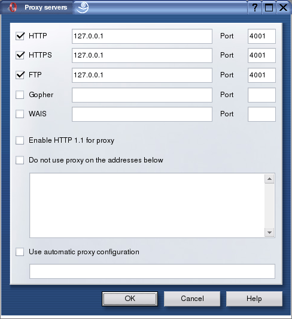

Settings for Various Browsers
JAP Setup for Opera
To set up JAP for Opera, do the following steps:
1.) From the "Tools" menu, choose the submenu "Preferences". In the new window that opens, choose the category "Network"

2.) Now you can change the proxy server settings. Click on the "Proxy servers" button. A new window opens where the following settings need to be changed:
Click on the checkboxes for HTTP, HTTPS, and FTP. In each of the fields, enter the server address "127.0.0.1". Enter "4001" for the port.

If you want specify addresses where JAP shall not be used, you can enter those exceptions into the field Do not use proxy on the addresses below, after activating the checkbox.
Please note that exceptions can be managed in a more flexible way using Proxomitron.
Note: If you set a different listener port in JAP, you'll have to enter this port here too, rather than 4001.